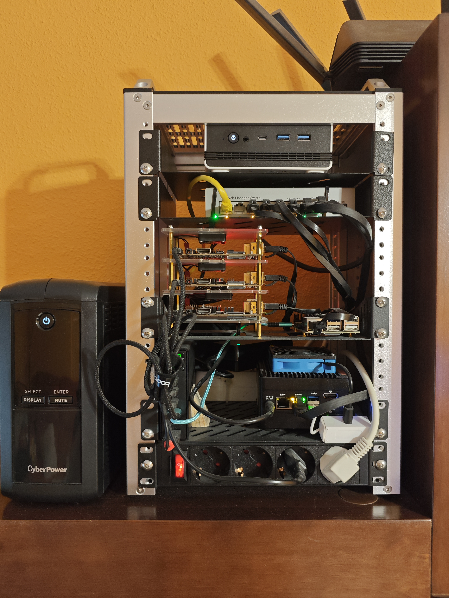

Hardware
This document outlines the hardware setup for our Homelab — a cluster designed for data platform hosting, AI workloads, home automation, and general experimentation.
Server Rack
All cluster hardware (except the UPS) is mounted in a DeskPi RackMate T1-Plus — a compact, open-frame desktop rack designed for mini-PCs and SBCs.
{kind=link}

DeskPi RackMate T1-Plus
| Form factor | Desktop open-frame rack |
| Rack units | 6U |
| Compatibility | Mini-ITX, SBC clusters, 1U accessories |
| Source | DeskPi RackMate T1-Plus |
The T1-Plus sits on a shelf and holds the full cluster in a compact footprint. Its open-frame design provides good passive airflow across the SBCs and mini-PCs. Layout from top to bottom:
| Slot | Device |
|---|---|
| Top | CHUWI AuBox (AMD64 worker) |
| 2nd | HORACO 2.5GbE Managed Switch |
| 3rd | OrangePi stack (4 boards on acrylic standoffs — control plane + 3 ARM64 workers) |
| 4th | CWWK X86-P5 (NAS + AMD64 worker) |
| Bottom | PDU / power strip |
The CyberPower UPS sits beside the rack on the same shelf.
Architecture
graph TD
Internet(["🌐 Internet"])
Router["Home Router"]
Tailscale["Tailscale VPN"]
Internet --- Router
Internet -. "zero-trust" .- Tailscale
Router -->|"1 GbE"| Switch["HORACO Managed Switch\n2.5GbE 8-port + 10G SFP+"]
Switch -->|"1 GbE"| CP["OrangePi 4 LTS\nControl Plane · 4 GB"]
Switch -->|"1 GbE"| W1["OrangePi 5B #1\nARM64 Worker · 16 GB"]
Switch -->|"1 GbE"| W2["OrangePi 5B #2\nARM64 Worker · 16 GB"]
Switch -->|"1 GbE"| W3["OrangePi 5B #3\nARM64 Worker · 16 GB"]
Switch -->|"2.5 GbE"| AMD["CHUWI AuBox\nAMD64 Worker · Ryzen 7 8745HS · 48 GB"]
Switch -->|"2.5 GbE"| NAS["CWWK X86-P5\nNAS + AMD64 Worker · 16 GB"]
Switch -->|"2.5 GbE"| AMD2["Lenovo Legion\nAMD64 GPU Worker · Ryzen 5 5600H · 24 GB · RTX 3060M"]
UPS["CyberPower UPS"] -->|"NUT · graceful shutdown"| NAS
Tailscale -. "remote access" .- SwitchThe cluster has evolved over time as hardware was added and replaced. The current generation combines a lightweight ARM control plane with x86 mini-PCs as the primary compute workhorses.
- Control Plane — OrangePi 4 LTS (4 GB RAM)
- Hosts the K3s control plane; low resource requirements make it a good fit.
- Connected to the home network switch as the cluster entry point.
- ARM64 Workers — OrangePi 5B × 3 (16 GB RAM each)
- RK3588 SoC — 8-core ARM Cortex-A76/A55, integrated NVMe storage.
- Original worker nodes; suitable for lightweight and multi-arch workloads.
- AMD64 Worker — CHUWI AuBox (AMD Ryzen 7 8745HS, 48 GB RAM)
- High-performance mini-PC; used for compute-heavy jobs (Spark and Trino).
- GPU Worker — Lenovo Legion (AMD Ryzen 5 5600H, 24 GB RAM, RTX 3060M)
- Runs Ollama with
qwen3.5:4bfor local inference consumed by Sympozium agents.
- Runs Ollama with
- NAS + Worker — CWWK X86-P5 (Intel N305, 16 GB RAM, RAID 3×1TB HDD + 128 GB NVMe)
- Acts as the NFS file server and a Kubernetes worker simultaneously.
- RAID array provides bulk storage for media and backups.
- CyberPower UPS
- Protects the cluster against power outages and ensures a clean, graceful shutdown.
- Integrated with TrueNAS via the NUT protocol — when power is lost TrueNAS triggers a coordinated cluster-wide shutdown.
- Power metrics are exported via a Prometheus exporter and visualised in Grafana.
- HORACO 2.5GbE Managed Switch (8-port 2.5GBASE-T + 10G SFP+)
- The NAS, CHUWI AuBox, and Lenovo Legion use the high-speed switch connections where supported.
- OrangePi nodes connect at 1 GbE; port isolation ensures the NAS sustains 2.5 GbE throughput to multiple 1G clients simultaneously without bottlenecking.
- VLAN support segments cluster traffic away from the home router network.
- Lenovo Legion GPU worker
- Provides the NVIDIA GPU-backed Ollama inference capacity used by Sympozium agents.
Networking
- Local Network
- All cluster nodes connect via the HORACO managed switch with static IP addresses configured at the OS level.
- The NAS and AMD64 worker run at 2.5 GbE; OrangePi nodes run at 1 GbE.
- VLANs isolate cluster-internal traffic from the home router network, preventing unnecessary broadcast traffic from reaching the rest of the LAN.
- Communication Flow
- Intra-cluster traffic stays on the local switch.
- External access is handled by Tailscale VPN — no port forwarding required.
- Traefik routes HTTP/HTTPS traffic to the correct services via IngressRoutes.
Storage
- SD Card / eMMC
- OS is stored on microSDXC Class 10 (OrangePi) or eMMC (mini-PCs).
- NVMe SSD
- Each OrangePi 5B has an internal NVMe SSD for data and Longhorn storage.
- The CWWK NAS has an additional 128 GB NVMe for fast metadata storage.
- RAID Array
- The CWWK NAS provides 3×1 TB RAID storage, shared via NFS for media and large files.
- Kubernetes Storage Services
- Longhorn provides distributed block storage across worker nodes.
- Garage provides S3-compatible object storage for the data lake and backups.
Hardware Components
The current hardware used in the cluster. The list has evolved since the initial setup — see Lessons Learned for context on hardware choices.
Servers
| Device | Specs | Role |
|---|---|---|
| OrangePi 4 LTS | 4 GB RAM, RK3399, microSD | Control Plane |
| OrangePi 5B × 3 | 16 GB RAM, RK3588, internal NVMe | ARM64 Workers |
| CHUWI AuBox | AMD Ryzen 7 8745HS, 48 GB RAM | Heavy AMD64 Worker |
| Lenovo Legion | AMD Ryzen 5 5600H, 24 GB RAM, RTX 3060M | GPU Worker / Ollama |
| CWWK X86-P5 | Intel N305, 16 GB RAM, 3×1 TB RAID HDD + 128 GB NVMe | NAS + AMD64 Worker |
Networking & Power
| Device | Notes |
|---|---|
| HORACO 2.5GbE Managed Switch 8-port + 10G SFP+ | 2.5 GbE to NAS and AMD64 worker; 1 GbE to OrangePi nodes; VLAN support |
| CyberPower UPS | Protects against power outages; NUT integration with TrueNAS for graceful shutdown; monitored via Prometheus + Grafana |